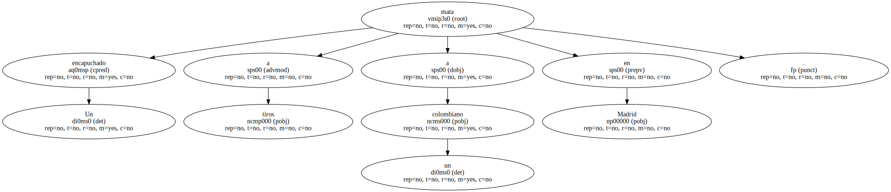
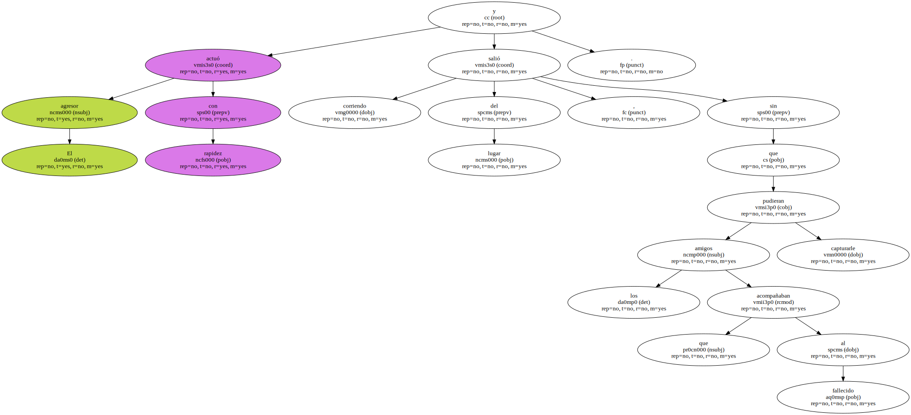

Un encapuchado mata a tiros a un colombiano en Madrid.
El crimen ocurrió pasadas las once de la noche de ayer cuando la víctima , José Raúl Sánchez Hernández , de 31 años y sin antecedentes , se encontraba en una cabina hablando por teléfono en la calle de Los Monegros , cerca de la vivienda que compartía con unos compatriotas.

El agresor actuó con rapidez y salió corriendo del lugar , sin que los amigos que acompañaban al fallecido pudieran capturarle.
